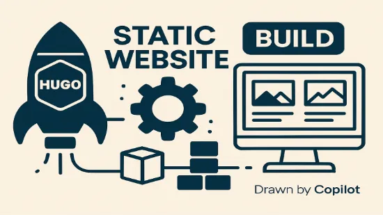

hugo standard 기반 정적 웹사이트 구축

1. hugo 설치
1.1. 패키지 관리자 준비
####### Powershell 관리자권한 실행 필요
####### choco -v 명령으로 사전 chocolatey 설치여부 확인
PS C:\WINDOWS\system32> Set-ExecutionPolicy Bypass -Scope Process -Force; [System.Net.ServicePointManager]::SecurityProtocol = [System.Net.ServicePointManager]::SecurityProtocol -bor 3072; iex ((New-Object System.Net.WebClient).DownloadString('https://community.chocolatey.org/install.ps1'))
Forcing web requests to allow TLS v1.2 (Required for requests to Chocolatey.org)
Getting latest version of the Chocolatey package for download.
Not using proxy.
Getting Chocolatey from https://community.chocolatey.org/api/v2/package/chocolatey/2.6.0.
Downloading https://community.chocolatey.org/api/v2/package/chocolatey/2.6.0 to C:\Users\deokh\AppData\Local\Temp\chocolatey\chocoInstall\chocolatey.zip
Not using proxy.
Extracting C:\Users\deokh\AppData\Local\Temp\chocolatey\chocoInstall\chocolatey.zip to C:\Users\deokh\AppData\Local\Temp\chocolatey\chocoInstall
Installing Chocolatey on the local machine
Creating ChocolateyInstall as an environment variable (targeting 'Machine')
Setting ChocolateyInstall to 'C:\ProgramData\chocolatey'
WARNING: It's very likely you will need to close and reopen your shell
before you can use choco.
Restricting write permissions to Administrators
We are setting up the Chocolatey package repository.
The packages themselves go to 'C:\ProgramData\chocolatey\lib'
(i.e. C:\ProgramData\chocolatey\lib\yourPackageName).
A shim file for the command line goes to 'C:\ProgramData\chocolatey\bin'
and points to an executable in 'C:\ProgramData\chocolatey\lib\yourPackageName'.
Creating Chocolatey CLI folders if they do not already exist.
chocolatey.nupkg file not installed in lib.
Attempting to locate it from bootstrapper.
PATH environment variable does not have C:\ProgramData\chocolatey\bin in it. Adding...
WARNING: Not setting tab completion: Profile file does not exist at
'C:\Users\deokh\Documents\WindowsPowerShell\Microsoft.PowerShell_profile.ps1'.
Chocolatey CLI (choco.exe) is now ready.
You can call choco from anywhere, command line or PowerShell by typing choco.
Run choco /? for a list of functions.
You may need to shut down and restart PowerShell and/or consoles
first prior to using choco.
Ensuring Chocolatey commands are on the path
Ensuring chocolatey.nupkg is in the lib folder
PS C:\WINDOWS\system32> choco -v
2.6.0
1.2. 필요패키지 설치 및 업그레이드
- 설치
####### Powershell 관리자권한 실행 필요 ####### hugo version 명령으로 사전 hugo 설치여부 확인 PS C:\WINDOWS\system32> choco install hugo-extended -y Chocolatey v2.6.0 Installing the following packages: hugo-extended By installing, you accept licenses for the packages. Downloading package from source 'https://community.chocolatey.org/api/v2/' Progress: Downloading hugo-extended 0.152.2... 100% hugo-extended v0.152.2 [Approved] hugo-extended package files install completed. Performing other installation steps. Extracting 64-bit C:\ProgramData\chocolatey\lib\hugo-extended\tools\hugo_extended_0.152.2_windows-amd64.zip to C:\ProgramData\chocolatey\lib\hugo-extended\tools... C:\ProgramData\chocolatey\lib\hugo-extended\tools ShimGen has successfully created a shim for hugo.exe The install of hugo-extended was successful. Deployed to 'C:\ProgramData\chocolatey\lib\hugo-extended\tools' Chocolatey installed 1/1 packages. See the log for details (C:\ProgramData\chocolatey\logs\chocolatey.log). PS C:\WINDOWS\system32> hugo version hugo v0.152.2-6abdacad3f3fe944ea42177844469139e81feda6+extended windows/amd64 BuildDate=2025-10-24T15:31:49Z VendorInfo=gohugoio - 업그레이드
####### Powershell 관리자권한 실행 필요 ####### hugo version 명령으로 사전 hugo 설치여부 확인 PS C:\WINDOWS\system32> hugo version hugo v0.152.2-6abdacad3f3fe944ea42177844469139e81feda6+extended windows/amd64 BuildDate=2025-10-24T15:31:49Z VendorInfo=gohugoio PS C:\WINDOWS\system32> choco upgrade hugo-extended Chocolatey v2.6.0 Upgrading the following packages: hugo-extended By upgrading, you accept licenses for the packages. You have hugo-extended v0.152.2 installed. Version 0.155.3 is available based on your source(s). Downloading package from source 'https://community.chocolatey.org/api/v2/' Progress: Downloading hugo-extended 0.155.3... 100% hugo-extended v0.155.3 [Approved] hugo-extended package files upgrade completed. Performing other installation steps. The package hugo-extended wants to run 'chocolateyInstall.ps1'. Note: If you don't run this script, the installation will fail. Note: To confirm automatically next time, use '-y' or consider: choco feature enable -n allowGlobalConfirmation Do you want to run the script?([Y]es/[A]ll scripts/[N]o/[P]rint): Y Extracting 64-bit C:\ProgramData\chocolatey\lib\hugo-extended\tools\hugo_extended_0.155.3_windows-amd64.zip to C:\ProgramData\chocolatey\lib\hugo-extended\tools... C:\ProgramData\chocolatey\lib\hugo-extended\tools ShimGen has successfully created a shim for hugo.exe The upgrade of hugo-extended was successful. Deployed to 'C:\ProgramData\chocolatey\lib\hugo-extended\tools' Chocolatey upgraded 1/1 packages. See the log for details (C:\ProgramData\chocolatey\logs\chocolatey.log). PS C:\WINDOWS\system32> hugo version hugo v0.155.3-8a858213b73907e823e2be2b5640a0ce4c04d295+extended windows/amd64 BuildDate=2026-02-08T16:40:42Z VendorInfo=gohugoio
1.3. 사이트 생성
####### 여기서부터 Powershell 관리자권한 불필요
$ hugo new site . ## .은 현재위치에, 문자는 새 디렉터리에 생성
Congratulations! Your new Hugo site was created in D:\dev\www.
Just a few more steps...
1. Change the current directory to D:\dev\www.
2. Create or install a theme:
- Create a new theme with the command "hugo new theme <THEMENAME>"
- Or, install a theme from https://themes.gohugo.io/
3. Edit hugo.toml, setting the "theme" property to the theme name.
4. Create new content with the command "hugo new content <SECTIONNAME>\<FILENAME>.<FORMAT>".
5. Start the embedded web server with the command "hugo server --buildDrafts".
See documentation at https://gohugo.io/.
1.4. 생성된 디렉토리 구조
root
│ hugo.toml ####### 추후 config.toml로 변경
├─archetypes
│ default.md
├─assets
├─content ####### 정적 콘텐츠 디렉토리
│ └─categories ####### 여기부터 사용자화
│ └─posts
│ ***.md
│ ***.svg
├─data
├─i18n //internationalization 여러 언어로 지원할 수 있도록 번역 문자열을 관리
├─layouts
├─static
└─themes
2. 초기 설정
2.1. 테마 적용 및 삭제
####### git 초기화
$ git init
blah blah blah blah blah blah ~~~~
####### 테마설치
$ git submodule add https://github.com/theNewDynamic/gohugo-theme-ananke themes/ananke
Cloning into 'D:/dev/www/themes/ananke'...
remote: Enumerating objects: 4098, done.
remote: Counting objects: 100% (70/70), done.
remote: Compressing objects: 100% (43/43), done.
Receiving objects: 99% (4058/4098), 6.16 remote: Total 4098 (delta 43), reused 42 (delta 25), pack-reused 4028 (from 3)
Receiving objects: 100% (4098/4098), 6.16 Receiving objects: 100% (4098/4098), 6.20 MiB | 12.30 MiB/s, done.
Resolving deltas: 100% (1977/1977), done.
warning: in the working copy of '.gitmodules', LF will be replaced by CRLF the next time Git touches it
####### 설정파일(hugo.toml) 편집
# hugo.toml 또는 hugo.yaml 등 초기화 후 설치한 테마
theme = "ananke"
####### 테스트 콘텐츠 생성
$ hugo new content category/my-first-post.md
blah blah blah blah blah blah ~~~~
####### 테마 삭제: submodule 등록해제 -> Git 설정제거 순서대로 진행
$ git submodule deinit -f theme/설치한테마명
blah blah blah blah blah blah ~~~~
$ git rm -f themes/설치한테마명
blah blah blah blah blah blah ~~~~
$ git commit -m "커밋한 내용" # 커밋 전에 git add 필요없음.
blah blah blah blah blah blah ~~~~
####### 만일 submodule deinit 가 실패하는 경우
# .gitmodules와 .git/config 열어 테마 블록 삭제
# 테마 디렉터리 수동 삭제
# git add .gitmodules 수행 후 커밋
2.2. 테스트 서버 구동
D:\dev\www>hugo server -D
Watching for changes in D:\dev\www\{archetypes,assets,content,data,i18n,layouts,static,themes}
Watching for config changes in D:\dev\www\hugo.toml, D:\dev\www\themes\ananke\config\_default
Start building sites …
hugo v0.152.2-6abdacad3f3fe944ea42177844469139e81feda6+extended windows/amd64 BuildDate=2025-10-24T15:31:49Z VendorInfo=gohugoio
│ EN
──────────────────┼────
Pages │ 26
Paginator pages │ 0
Non-page files │ 0
Static files │ 1
Processed images │ 0
Aliases │ 8
Cleaned │ 0
Built in 195 ms
Environment: "development"
Serving pages from disk
Running in Fast Render Mode. For full rebuilds on change: hugo server --disableFastRender
Web Server is available at http://localhost:1313/ (bind address 127.0.0.1)
Press Ctrl+C to stop
2.3. 사이트 설정 파일 복사 및 기능 추가/변경
-
사이트 설정 복사
소스위치: \themes\theme-name\exampleSite\hugo.toml
복사위치: \hugo.toml -
테마 레이아웃 복사
소스위치: \themes\theme-name\layouts
복사위치: \layouts\ -
게시글 샘플 복사
소스위치: \themes\theme-name\exampleSite\content\post
복사위치: \content\post\ -
검색 섹션 인덱스 페이지 복사
소스위치: \themes\theme-name\content\search\_index.md 복사위치: \content\search\_index.md
2.4. 기타설정 - vscode에서 날짜 자동입력 스니핏 추가
-
Ctrl + Shift + P
-
Snippets: Configure Snippets 입력
-
New Global Snippets File…
-
global.json.code-snippets 파일 생성
//global.json.code-snippets 내용 { "Insert ISO DateTime": { "prefix": "isodate", "body": [ "${CURRENT_YEAR}-${CURRENT_MONTH}-${CURRENT_DATE}T${CURRENT_HOUR}:${CURRENT_MINUTE}:${CURRENT_SECOND}+09:00" ], "description": "Insert ISO 8601 datetime for Hugo Front Matter" } } -
Settings - Text Editor - Tab Completion - OnlySnippets으로 변경
3. 부트스트랩 (부분)적용 - SCSS 네임스페이스 빌드 방식
3.1. 부트스트랩 설치
-
hugo 루트 디렉토리 이동
-
현재 디렉토리를 npm 포르젝트로 초기화
D:\dev\www>npm init -y Wrote to D:\dev\www\package.json: { "name": "www", "version": "1.0.0", "description": "", "main": "index.js", "scripts": { "test": "echo \"Error: no test specified\" && exit 1" }, "keywords": [], "author": "", "license": "ISC", "type": "commonjs" } -
부트스트랩 설치
- 최신 버전의 부트스트랩설치시 Hugo의 **내장 SCSS 컴파일러(libSass 기반)**가 최신 Bootstrap 5의 SCSS 함수(to-rgb)를 지원하지 않아 “TOCSS: failed to transform “/scss/bootstrap.scss” (text/x-scss): Function not found: to-rgb” 오류 발생
- Bootstrap 5는 Dart Sass를 기준으로 작성되었는데, Hugo는 아직 Dart Sass가 아니라 libSass를 쓰고 있어 최신 함수들 인식 불능
// 명령프롬프트로 bootstrap 4버전 설치 필요 D:\dev\www>npm install bootstrap@4.6.2 npm warn deprecated popper.js@1.16.1: You can find the new Popper v2 at @popperjs/core, this package is dedicated to the legacy v1 npm warn deprecated bootstrap@4.6.2: This version of Bootstrap is no longer supported. Please upgrade to the latest version. added 2 packages, removed 1 package, changed 1 package, and audited 4 packages in 1s 2 packages are looking for funding run `npm fund` for details found 0 vulnerabilities -
scss 생성
# /assets/scss/bootstrap.scss 파일내용 # 네임스페이스 적용 .bts { @import "node_modules/bootstrap/scss/bootstrap"; } -
head파일에 scss 적용
# /layouts/partials/head.html 파일에 내용 추가 {{ $style := resources.Get "scss/bootstrap.scss" | toCSS }} <link rel="stylesheet" href="{{ $style.RelPermalink }}"> -
footer파일에 js 적용
<!-- Bootstrap JS (bundle: Popper 포함) --> <script src="https://cdn.jsdelivr.net/npm/bootstrap@5.3.2/dist/js/bootstrap.bundle.min.js" integrity="sha384-..." crossorigin="anonymous"></script> -
부트스트랩 css 적용
- bts 클래스를 부모 클래스로 둘 경우 부트스트랩 적용
<div class="bts"> <div class="container"> <span class="placeholder col-12"></span> <span class="placeholder col-12 bg-primary"></span> <span class="placeholder col-12 bg-secondary"></span> <span class="placeholder col-12 bg-success"></span> <span class="placeholder col-12 bg-danger"></span> <span class="placeholder col-12 bg-warning"></span> <span class="placeholder col-12 bg-info"></span> <span class="placeholder col-12 bg-light"></span> <span class="placeholder col-12 bg-dark"></span> </div> </div>
4. Github.com에 퍼블리싱용 파일 업로드
4.1. 리포지토리 생성
- Choose visibility: public 선택해야 정적 호스팅 가능
- Add README: 사이트 설명용 파일
- Add .gitignore: push 제외할 폴더 선택 옵션으로 추후 로컬에서 설정가능
- Add license: 선택옵션
4.2. 로컬에서 push
####### 호스팅할 파일이 있는 경로로 이동
$ cd public
####### 폴더 초기화
$ git init
Initialized empty Git repository in D:/OneDrive/dev/public-re-kr/public/.git/
####### 로컬 디렉터리와 원격저장소 연결
$ git remote add origin https://github.com/username/project-site.git
####### 새 브랜치를 생성하고 그 브랜치로 이동
$ git checkout -b gh-pages
Switched to a new branch 'gh-pages'
####### 모든 파일을 스테이징
$ git add .
####### 스테이징한 파일을 커밋
$ git commit -m "Deploy Hugo site"
[gh-pages (root-commit) 852ae2c] Deploy First Public Directory
299 files changed, 54843 insertions(+)....
####### force 옵션시 로컬파일 기준 강제 덮어쓰기 수행(옵션 제거시 변경된 파일만 업데이토)
$ git push origin gh-pages --force
5. 사용자 도메인 설정
5.1. 도메인 IPv4 DNS 등록
| 유형 | 호스트이름 | 값 |
|---|---|---|
| A | @ | 185.199.108.153 |
| A | @ | 185.199.109.153 |
| A | @ | 185.199.110.153 |
| A | @ | 185.199.111.153 |
| CNAME | www | username.github.io |
5.2. 리포지토리 Pages 설정 검토
- 리포지토리 → Settings → Pages
- Source: Deploy from a branch
- Branch: gh-pages /(root)
- Custom domain: 사용할 도메인
- Enforce HTTPS: 체크
6. Google Analytics 설정
- 계정 생성: 개정이름 및 데이터 공유 설정
- 속성 만들기: 속성값, 시간대, 통화(금융)
- 비즈니스 세부정보: 업종
- 비즈니스 목표: 설정에 맞게 2개 선택
- 데이터 수집
- 데이터 스트림 설정
- Google 태그 설정 방법 선택(테마에 따라 측정ID만 넣어줘도 되는 경우 확인 필요)